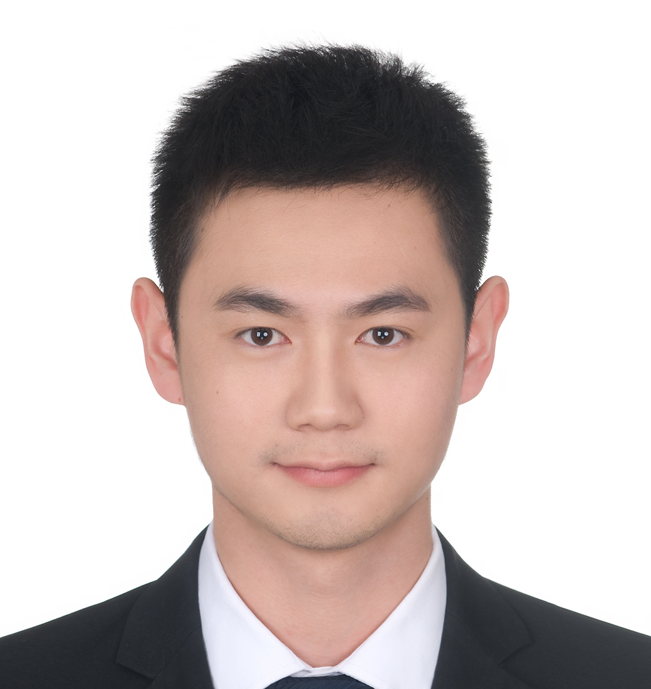

|
Wenxiang Jiao
Ph.D Student
Department of Computer Science and Engineering
The Chinese University of Hong Kong
Hong Kong SAR, China.
E-mail: wxjiao@cse.cuhk.edu.hk
Google Scholar
GitHub
|

|
Biography
I am a final (fourth) year Ph.D student at The Chinese University of Hong Kong, advised by Prof. Irwin King and Prof. Michael R. Lyu.
Before that, I received my Bachelor degree and Mphil degree from Nanjing University in 2015 and 2017, respectively.
Education
Shatin, NT, Hong Kong
The Chinese University of Hong Kong (CUHK)
Aug. 2017 - Present
Doctor of Philosophy Student, Computer Science & Engineering
Advisor: Irwin King (IEEE Fellow), and Michael R. Lyu (IEEE Fellow, ACM Fellow)
Nanjing, China
Nanjing University (NJU)
Sep. 2015 - Jun. 2017
Mphil of Engineering, Optical Engineering
Advisor: Guanghui Wang
Nanjing, China
Nanjing University (NJU)
Sep. 2011 - Jun. 2015
Bachelor of Engineering, Information Engineering
Research Interests
My research interests are mainly in Natural Language Processing and Deep Learning Techniques, focusing on tasks like representation learning, conversation analysis, and machine translation.
Particularly, I am interested in data analysis and exploitation on NLP tasks for more effective training of the models, thereby improving performance.
-
Conversation analysis: emotion recognition, pre-training on unlabeled conversations, multimodal learning.
-
Machine translation: inactive examples in bilingual data, uncertain monolingual data for self-training.
Experiences
-
Oct. 2019 - Dec. 2019
Research Intern: Tencent AI Lab.
Mentor: Xing Wang, Zhaopeng Tu
Worked on data analysis and exploitation in neural machine translation.
Published one paper in EMNLP 2020, submitted one paper to TKDE and one paper to ACL 2021.
Publications
Awards
CUHK, 2017-Present
Full Postgraduate Studentship
NJU, 2016
Huawei Studentship
NJU, 2014
Bejing Bank Outstanding Scholarship
Ministry of Education of China, 2013
China National Scholarship
NJU, 2015
Outstanding Graduates Award
COMAP, 2014
Honorable Mentions in American Mathematical Contest in Modeling (MCM)
CSIAM, 2014
Honorable Mentions in National College Mathematical Contest in Modeling
COS, 2014
Honorable Mentions in National College Optoelectronic Design Competition
Last updated on Mar., 2021.